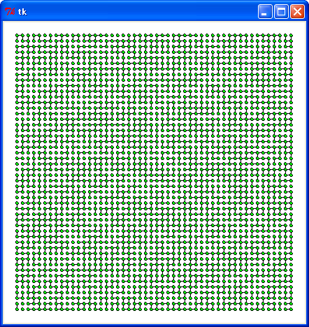
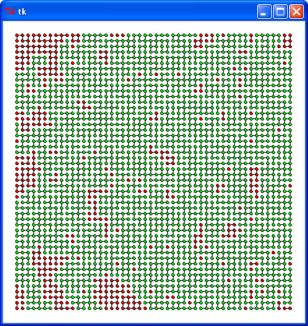

今回は Union-Find というアルゴリズムを取り上げます。Union-Find は集合の和を求める操作 (Union) と、ある要素がどの集合に属しているか問い合わせる操作 (Find) を高速に行うためのアルゴリズムです。
なお、このドキュメントは拙作のページ Memorandum 2012 年 1 月 で書いた Union-Find の話を加筆・修正したものです。重複する部分がありますが、あしからずご了承ください。
具体的に説明すると、n 個の要素を持つ集合 S と互いに素な S の部分集合 S1, S2, ..., Si, ... を考えます。互いに素な集合というのは、ある一つの要素が複数の集合に属することがない集合のことをいいます。これを Disjoint Set といいます。ここで union と find を次のように定義します。
たとえば、集合 S = {1, 2, 3, 4, 5, 6, 7} とし、部分集合 A = {1, 2, 3, 4}, B = {5, 6}, C = {7} とします。find(1) は A を返し、find(5) は B を返します。union(A, B) を実行すると A = {1, 2, 3, 4, 5, 6} になります。次に find(1) を実行すると返り値は A のままですが、find(5) は B ではなく A を返します。
ある種の問題では、最初はそれぞれのデータを一つの集合にしておいて、あとでいくつかの集合を併合したり、要素 x と y が同じ部分集合に属しているか調べる操作が必要になります。このような場合、Union-Find はとても役に立ちます。たとえば、拙作のページ 欲張り法 [2] で説明した「クラスカルのアルゴリズム」は Union-Find を使ってプログラムを高速化することができます。
Union-Find のもっとも簡単な方法は、n 個の集合の要素を 0 から n - 1 の整数に対応させ、その要素が属する集合の代表を配列に格納することです。代表は集合の要素 (整数値) を使うことにすると、プログラムは次のようになります。
リスト : ナイーブな Union-Find
class UnionFind0:
def __init__(self, size):
self.table = range(size)
def find(self, x):
return self.table[x]
def union(self, x, y):
x1 = self.find(x)
y1 = self.find(y)
if x1 == y1: return False
# 併合
for i in xrange(len(self.table)):
if self.table[i] == y1: self.table[i] = x1
return True
インスタンス変数 table に大きさが size の配列 (Python のリスト) をセットします。配列の要素は 0 から size - 1 に初期化します。これで各要素は独立した集合になります。find は table[x] の値を返すだけです。union は x と y の代表を find で求め、それを x1 と y1 にセットします。同じ値であれば併合を行う必要はありません。この場合は False を返します。併合する場合は、table の全要素を調べて、y1 の値を x1 に書き換えます。これで集合 x1 に集合 y1 を併合することができます。
プログラムを見ればおわかりのように、find は高速に実行できますが、union は配列の要素をすべてチェックする必要があるので、size が大きくなると実行時間が遅くなります。
Union-Find の高速な実装方法に、親節へのリンクをもつ「木」を使う方法があります。次の図を見てください。
1 = {1, 2, 3, 4} 5 = {5, 6} 7 = {7}
root root root
●１ ●５ ●７
／ ＼ │
● ●３ ●
２ │ ６
●４
図 : 木による Union-Find の実装
木の節には要素と親節へのリンクを格納します。そして、ルートに格納された要素を、その集合の代表として扱います。そうすると、find はルートの値を返し、union(n, m) は n の root に m の root を挿入することで実現できます。このとき、注意する点がひとつあります。次の図を見てください。
1 = {1, 2, 3, 4} 5 = {5, 6}
root root
●１ ●５
／│＼ ／ ＼
／ │ ＼ ／ ＼
● ●３ ●５ ● ●１
２ │ │ ６ ／ ＼
●４ ●６ ● ●３
２ │
●４
(a) 1 に 5 を挿入 (b) 5 に 1 を挿入
図 : 併合処理
上図 (a) のように集合 1 に 5 を挿入する場合、木の高さは 3 のままですが、(b) のように集合 5 に 1 を挿入すると、木の高さが 2 から 4 に増えてしまいます。もし、要素がひとつしかない集合に他の集合を挿入していくと、木の高さは必ず +1 されるので、n 個の要素持つ集合の木の高さは、最悪の場合 n になることもありえます。これでは find の操作に時間がかかってしまいます。
参考文献 1 によると、『根に集合の要素数を入れておき、2 つの集合を併合するとき、小さいほうの木を大きいほうの根に子としてつなげる』 ことで、find の操作を log n に比例する時間で行うことができるそうです。
小さな集合 A を大きな集合 B に併合すると、A の木の高さは +1 され、B の大きさは A の 2 倍以上になります。併合された A の要素は 2 倍以上の大きさの集合に属することになるので、全体の要素数を n とすると、A の要素は log n 回を超えて併合されることはありません。したがって、木の高さも log n に抑えることができます。
たとえば、下図のように 16 個の要素を併合してみましょう。
１ ２ ３ ４ ５ ６ ７ ８ ９ 10 11 12 13 14 15 16
● ● ● ● ● ● ● ● ● ● ● ● ● ● ● ●
１ ３ ５ ７ ９ 11 13 15
● ● ● ● ● ● ● ●
│ │ │ │ │ │ │ │
● ● ● ● ● ● ● ●
２ ４ ６ ８ 10 12 14 16
１ ５ ９ 13
● ● ● ●
／│ ／│ ／│ ／│
● ●３ ● ●７ ● ●11 ● ●15
２ │ ６ │ 10 │ 14 │
● ● ● ●
４ ８ 12 16
１ ９
● ●
／│＼ ／│＼
／ │ ＼ ／ │ ＼
● ●３ ●５ ● ●11 ●13
２ │ │＼ 10 │ │＼
● ● ●７ ● ● ●15
４ ６ │ 12 14 │
● ●
８ 16
１
●──────────┐
／│＼ │
／ │ ＼ │
● ●３ ●５ ●９
２ │ │＼ ／│＼
● ● ●７ ／ │ ＼
４ ６ │ ● ●11 ●13
● 10 │ │＼
８ ● ● ●15
12 14 │
●
16
図 : 集合の併合
集合 16 に注目してください。隣り合った集合を併合していくと、集合 16 は集合 15, 13, 9, 1 と 4 (log2 16) 回併合され、木の高さは 4 になります。このように、要素数を n とすると、木の高さは高々 log2 n 程度におさえることができます。
この方法は配列を使って実装することができます。今回のプログラムは、前原貴憲さんの Spaghetti Source - Union Find を参考にさせていただきました。前原さんに感謝いたします。
リスト : Union Find (2)
class UnionFind1:
def __init__(self, size):
# 負の値はルート (集合の代表) で集合の個数
# 正の値は次の要素を表す
self.table = [-1 for _ in xrange(size)]
# 集合の代表を求める
def find(self, x):
while self.table[x] >= 0: x = self.table[x]
return x
# 併合
def union(self, x, y):
s1 = self.find(x)
s2 = self.find(y)
if s1 != s2:
if self.table[s1] >= self.table[s2]:
# 小さいほうが個数が多い
self.table[s1] += self.table[s2]
self.table[s2] = s1
else:
self.table[s2] += self.table[s1]
self.table[s1] = s2
return True
return False
def union_bad(self, x, y):
s1 = self.find(x)
s2 = self.find(y)
if s1 != s2:
if self.table[s1] > self.table[s2]:
# 小さいほうが個数が多い
self.table[s1] += self.table[s2]
self.table[s2] = s1
else:
self.table[s2] += self.table[s1]
self.table[s1] = s2
return True
return False
要素の値を集合の代表とすることはナイーブな方法と同じです。リンクは配列を使って表すことができます。配列には親となる要素の値を格納します。そして、ルートには集合のサイズを格納します。サイズを正の値で表すと、リンクと区別が付かなくなるので、サイズにはマイナスを付けることにします。したがって、配列の要素は -1 に初期化します。
find は、table の値が 0 以上であれば親節をたどり、負の値を持つ集合の要素を返します。union は要素 x, y の代表を find でもとめて s1 と s2 にセットします。s1 と s2 が異なる集合であれば、大きな集合 (big) のルートに小さな集合 (little) を挿入します。サイズは負で表されているので、値が小さいほうが大きな集合になります。併合処理は簡単ですね。table[big] に table[little] を加算し、table[little] を big に書き換えるだけです。union_bad は union とは逆に、小さな集合に大きな集合を挿入します。
それでは実際に試してみましょう。次のリストを見てください。
リスト : 簡単なテスト
def test_union(func, data, size):
a = time.clock()
for x, y in data:
func(x, y)
print time.clock() - a
if __name__ == '__main__':
for size in [1000, 2000, 4000]:
data = [(random.randint(0, size - 1), random.randint(0, size - 1)) for _ in xrange(size)]
print size
s1 = UnionFind0(size)
s2 = UnionFind1(size)
s3 = UnionFind1(size)
test_union(s1.union, data, size)
test_union(s2.union, data, size)
test_union(s3.union_bad, data, size)
size 個の集合から要素をランダムで 2 つ選び、union で 2 つの集合を併合します。これを size 回繰り返し、その実行時間を計測します。結果は次のようになりました。
1000 0.171199132851 (UnionFind0) 0.00317163214878 (UnionFind1) 0.0183880912239 (UnionFind1.union_bad) 2000 0.683936924944 0.00648182939452 0.0598802361753 4000 2.71722327838 0.0129681286309 0.219075888137 実行環境 : Windows XP, celeron 1.40 GHz, Python 2.7
UnionFind0 (ナイーブな方法) はとても遅いことがわかります。UnionFind1 (木による実装方法) は、一目瞭然で union のほうが union_bad よりも高速ですね。木の高さを抑えることで、find の処理が高速になることがわかります。
Union-Find を高速化するもうひとつの考え方に「経路の圧縮」があります。find はルートまで節をたどります。そのあと、たどってきた節をすべてそのルートに挿入します。次の図を見てください。
root root
●５ ５●────┐
／ ＼ ／│＼ │
／ ＼ ／ │ ＼ │
● ●１ ● ●１ ● ●
６ ／ ＼ ６ │ ３ ４
● ●３ ●
２ │ ２
●４
(A) (B)
図 : 経路の圧縮
上図 (A) の状態で find(4) を求めると、その経路は 4 - 3 - 1 - 5 になります。節 1 はルート 5 の子なので、そのままにしておきます。節 3 と節 4 の親はルート 5 ではないので、3 と 4 の親をルート 5 に書き換えます。すると、木の状態は (A) から (B) のようになり、木の高さを 1 つ低くすることができます。
参考文献 1 によると、『経路を圧縮したとき、FIND の平均コストがどうなるかは解析がきわめて難しい。必ずしも小さい木を大きい木に併合しなくてもよいことにすると、n 回の FIND を O(n log n) 時間以内でできることを示せる。』 とのことです。
それではプログラムを作りましょう。次のリストを見てください。
リスト : Union-Find (経路の圧縮のみ)
class UnionFind2:
def __init__(self, size):
# 負の値はルート (集合の代表)
# 正の値は次の要素を表す
self.table = [-1 for _ in xrange(size)]
# 集合の代表を求める
def find(self, x):
if self.table[x] < 0:
return x
else:
# 経路の圧縮
self.table[x] = self.find(self.table[x])
return self.table[x]
# 併合
def union(self, x, y):
s1 = self.find(x)
s2 = self.find(y)
if s1 != s2:
self.table[s2] = s1
return True
return False
経路の圧縮は再帰定義を使うと簡単です。メソッド find は table[x] が負であれば x を返します。そうでなければ、find を再帰呼び出しして親節をたどり、その返り値を table[x] にセットして、その値を返します。これでたどってきた子をすべてルートに挿入することができます。併合を行うメソッド union は x が属する集合 s1 に y が属する集合 s2 を挿入します。大きさの比較は行っていません。
それでは簡単なテストを行ってみましょう。結果は次のようになりました。
1000 0.174465190408 (UnionFind0) 0.00317498453016 (UnionFind1) 0.00483161966116 (UnionFind2) 2000 0.688981420823 0.00640751827397 0.00999344888806 4000 2.74109446871 0.0131888270716 0.0203749359206 実行環境 : Windows XP, celeron 1.40 GHz, Python 2.7
経路を圧縮した場合、ナイーブな方法 (UnionFind0) よりも高速になりました。経路を圧縮する効果はとても高いことがわかります。しかしながら、大きい集合に小さい集合を挿入する方法 (UnionFind1) よりも少し遅くなりました。
参考文献 1 によると、2 つの方法を同時に使うことで、『特に n 回の FIND を O(nα(n)) 時間以内で完了できる。ここで α(n) は定数ではないが、log n よりも増え方がはるかに遅い関数である。』 とのことです。α(n) は「アッカーマンの関数」とよばれる増え方が非常に速い関数の逆関数になるそうです。
それでは実際に試してみましょう。プログラムと実行結果を示します。なお、集合の大きさ (size) は 10 倍に増やしています。ご注意くださいませ。
リスト : Union-Find (２つの方法を組み合わせる)
class UnionFind3:
def __init__(self, size):
# 負の値はルート (集合の代表) で集合の個数
# 正の値は次の要素を表す
self.table = [-1 for _ in xrange(size)]
# 集合の代表を求める
def find(self, x):
if self.table[x] < 0:
return x
else:
# 経路の圧縮
self.table[x] = self.find(self.table[x])
return self.table[x]
# 併合
def union(self, x, y):
s1 = self.find(x)
s2 = self.find(y)
if s1 != s2:
if self.table[s1] <= self.table[s2]:
# 小さいほうが個数が多い
self.table[s1] += self.table[s2]
self.table[s2] = s1
else:
self.table[s2] += self.table[s1]
self.table[s1] = s2
return True
return False
10000 0.0326527533527 (UnionFind1) 0.0542730989553 (UnionFind2) 0.0416078021089 (UnionFind3) 20000 0.0663584338233 0.112035468195 0.0837623217476 40000 0.135419725133 0.23634260779 0.171267856669 80000 0.279004733842 0.49426393578 0.347059472642 実行環境 : Windows XP, celeron 1.40 GHz, Python 2.7
2 つの方法を組み合わせた UnionFind3 の実行速度は UnionFind1 と UnionFind2 の中間になりました。今回のテスト結果では、大きい集合に小さい集合を挿入する方法 (UnionFind1) だけでも十分な効果が得られるようです。
なお、これらの結果は M.Hiroi のコーディング、実行したマシン、プログラミング言語などの環境に大きく依存しています。興味のある方はご自分の環境でいろいろ試してみてください。
次は、グラフ G で頂点 A と B が連結されているか判定する問題を考えます。次の図を見てください。
上図は 50 * 50 = 2500 個の頂点が格子状に配置されています。上下左右の線が「辺」を表します。データは次に示すプログラムで作成しました。
リスト : 格子状のデータを作成する
import random
def make_grid(size):
table = [[] for _ in xrange(size * size)]
for x in xrange(size):
for y in xrange(size):
n = y * size + x
for dx, dy in [(1, 0), (-1, 0), (0, 1), (0, -1)]:
if random.random() < 0.34:
x1 = x + dx
y1 = y + dy
if 0 <= x1 < size and 0 <= y1 < size:
n1 = y1 * size + x1
if n1 not in table[n]:
# 接続
table[n].append(n1)
table[n1].append(n)
return table
関数 make_grid は、大きさが size * size 個の隣接リストを生成します。隣の頂点と連結するか否かは乱数で決定します。連結する場合は、隣接リストに隣の頂点を追加します。上図のグラフは size を 50 とし、random.seed() で乱数のシードを 0 に設定して生成したものです。
頂点 A と B が連結しているか判定する一番簡単な方法は「深さ優先探索」することです。ただし、判定するたびに深さ優先探索するのは非効率的なので、あらかじめ深さ優先探索で連結している頂点をたどり、同じ番号を付けて配列に格納しておくことにします。配列の要素が同じ値であれば、2 つの頂点は連結していることがわかります。
プログラムは次のようになります。
リスト : 深さ優先探索による連結判定
class DFS:
def __init__(self, adjacent):
self.adjacent = adjacent
self.table = [0] * len(adjacent)
self.count = [0]
self.group = 0
# 連結された頂点をたどって同じ番号を付ける
for i in xrange(len(adjacent)):
if self.table[i] == 0:
self.group += 1
self.count.append(0)
self.dfs(i)
# 深さ優先探索
def dfs(self, node):
if self.table[node] == 0:
self.table[node] = self.group
self.count[self.group] += 1
for x in self.adjacent[node]:
self.dfs(x)
# 頂点が属する番号を返す
def find(self, x): return self.table[x]
# 部分集合とその要素数を返す
def subsetall(self):
return [(x, self.count[x]) for x in xrange(1, len(self.count))]
# 頂点の番号を表示する
def print_grid(s, size):
for y in xrange(size):
for x in xrange(size):
print "%3d" % s.find(y * size + x),
print
# test
if __name__ == '__main__':
a = make_grid(20)
s = DFS(a)
print s.subsetall()
print_grid(s, 20)
adjacent は隣接リストを表します。頂点の番号は table に格納し、その要素数を count に格納します。table は 0 に初期化します。group は部分集合の総数になります。すべての頂点が連結している場合、group は 1 になり、連結している頂点がない場合、group は頂点の総数と等しくなります。
table の要素が 0 の場合、その頂点はまだ訪問していないので、dfs を呼び出して連結している頂点に番号を付けます。このとき、group を t1 し、count の最後尾に 0 を追加して、要素の個数をカウントします。
メソッド dfs は頂点を深さ優先でたどります。table[node] に group をセットし、count[group] の値を +1 します。メソッド find は頂点 x が属する部分集合の番号を返します。この値が等しい頂点は連結されていると判定できます。メソッド subsetall は部分集合とその要素数をタプルにまとめ、それを配列に格納して返します。
それでは実行してみましょう。size は 20 * 20 としました。
[(1, 5), (2, 49), (3, 308), (4, 1), (5, 3), (6, 7), (7, 1), (8, 6), (9, 2), (10, 1), (11, 1), (12, 1), (13, 6), (14, 3), (15, 1), (16, 1), (17, 2), (18, 1), (19, 1)] 1 1 2 2 2 2 2 2 2 2 2 3 3 3 4 3 3 3 3 3 1 1 2 2 2 2 2 2 2 2 2 3 3 3 3 3 3 3 3 3 1 2 2 2 2 2 2 2 2 2 2 3 3 3 3 3 3 3 3 3 3 2 2 2 2 2 2 2 5 2 2 6 6 6 3 3 3 7 3 3 3 3 3 3 2 2 2 2 5 5 2 6 6 3 3 3 3 3 3 3 3 3 3 3 2 2 2 8 9 3 3 6 6 3 3 3 3 3 3 3 3 3 3 3 2 2 2 8 9 3 3 3 3 3 3 3 3 3 3 3 3 10 3 3 2 8 8 8 8 3 3 3 3 3 3 3 3 3 3 3 3 3 3 3 3 3 3 3 3 3 3 3 3 3 3 3 3 3 3 3 3 3 3 3 3 11 3 3 3 3 3 3 3 3 12 3 3 3 3 3 3 3 3 3 3 3 3 13 13 14 3 3 3 3 3 3 3 3 3 3 3 3 3 3 3 3 3 13 13 14 3 3 3 3 3 3 3 3 3 3 3 3 3 3 3 3 15 13 13 14 3 3 3 3 3 3 3 3 16 3 3 3 3 3 3 3 3 3 3 3 3 3 3 3 17 3 3 3 3 3 3 3 3 3 3 3 3 3 3 3 3 3 3 3 17 3 18 3 3 3 3 3 3 3 3 3 3 3 3 3 3 3 3 3 3 3 3 3 3 3 3 3 3 3 3 3 3 3 3 3 3 3 3 3 3 3 3 3 3 3 3 3 3 3 3 3 3 3 3 3 3 3 3 3 3 3 3 3 3 3 3 3 3 3 3 3 3 3 3 3 3 3 3 3 3 3 3 3 3 3 3 3 3 3 3 3 3 3 3 3 3 3 3 19 3 3 3 3 3 3
このように、深さ優先探索を使うと簡単にプログラムでき、実行速度も高速です。ただし、dfs を再帰呼び出しで実装しているため、要素数が多くなると Python のスタックがオーバーフローする危険性があります。実際、size をもっと増やすと、このプログラムでは実行できなくなります。
深さ優先探索よりも実行速度はやや遅くなりますが、Union-Find を使って頂点の連結を判定することができます。次のリストを見てください。
リスト : Union-Find による解法
class UnionFind:
def __init__(self, size):
# 負の値はルート (集合の代表) で集合の個数
# 正の値は次の要素を表す
self.table = [-1 for _ in xrange(size)]
# 集合の代表を求める
def find(self, x):
if self.table[x] < 0:
return x
else:
# 経路の圧縮
self.table[x] = self.find(self.table[x])
return self.table[x]
# 併合
def union(self, x, y):
s1 = self.find(x)
s2 = self.find(y)
if s1 != s2:
if self.table[s1] <= self.table[s2]:
# 小さいほうが個数が多い
self.table[s1] += self.table[s2]
self.table[s2] = s1
else:
self.table[s2] += self.table[s1]
self.table[s1] = s2
return True
return False
# 部分集合とその要素数を返す
def subsetall(self):
a = []
for i in xrange(len(self.table)):
if self.table[i] < 0:
a.append((i, -self.table[i]))
return a
# test
if __name__ == '__main__':
a = make_grid(20)
s = UnionFind(20 * 20)
for x in xrange(20 * 20):
for n in a[x]:
if x < n: s.union(x, n)
print s.subsetall()
print_grid(s, 20)
クラス UnionFind にメソッド subsetall を追加します。table から負の要素を取り出していけば、部分集合とその要素数を求めることができます。グラフは格子状なので、自分自身 x よりも大きい頂点、つまり右側と下側の頂点と union するだけで十分です。
実行結果は次のようになりました。DFS のテストと同じデータです。
[(0, 5), (5, 49), (14, 1), (15, 308), (68, 3), (71, 7), (77, 1), (107, 6), (108, 2), (141, 1), (185, 1), (194, 1), (207, 6), (209, 3), (246, 1), (258, 1), (274, 2), (296, 1), (393, 1)] 0 0 5 5 5 5 5 5 5 5 5 15 15 15 14 15 15 15 15 15 0 0 5 5 5 5 5 5 5 5 5 15 15 15 15 15 15 15 15 15 0 5 5 5 5 5 5 5 5 5 5 15 15 15 15 15 15 15 15 15 15 5 5 5 5 5 5 5 68 5 5 71 71 71 15 15 15 77 15 15 15 15 15 15 5 5 5 5 68 68 5 71 71 15 15 15 15 15 15 15 15 15 15 15 5 5 5 107 108 15 15 71 71 15 15 15 15 15 15 15 15 15 15 15 5 5 5 107 108 15 15 15 15 15 15 15 15 15 15 15 15 141 15 15 5 107 107 107 107 15 15 15 15 15 15 15 15 15 15 15 15 15 15 15 15 15 15 15 15 15 15 15 15 15 15 15 15 15 15 15 15 15 15 15 15 185 15 15 15 15 15 15 15 15 194 15 15 15 15 15 15 15 15 15 15 15 15 207 207 209 15 15 15 15 15 15 15 15 15 15 15 15 15 15 15 15 15 207 207 209 15 15 15 15 15 15 15 15 15 15 15 15 15 15 15 15 246 207 207 209 15 15 15 15 15 15 15 15 258 15 15 15 15 15 15 15 15 15 15 15 15 15 15 15 274 15 15 15 15 15 15 15 15 15 15 15 15 15 15 15 15 15 15 15 274 15 296 15 15 15 15 15 15 15 15 15 15 15 15 15 15 15 15 15 15 15 15 15 15 15 15 15 15 15 15 15 15 15 15 15 15 15 15 15 15 15 15 15 15 15 15 15 15 15 15 15 15 15 15 15 15 15 15 15 15 15 15 15 15 15 15 15 15 15 15 15 15 15 15 15 15 15 15 15 15 15 15 15 15 15 15 15 15 15 15 15 15 15 15 15 15 15 15 393 15 15 15 15 15 15
このように UnionFind を使って、頂点の連結を簡単に判定することができます。
UnionFind を使うと、大きなデータでも処理することが可能です。size が 50 * 50 のグラフにおいて、要素数が一番多い集合を緑で、それ以外の集合を赤で表すと次のようになります。
プログラムに難しいところはないので説明は割愛します。詳細は プログラムリスト２ をお読みください。
# coding: utf-8
#
# unionfind.py : Union-Find
#
# Copyright (C) 2012 Makoto Hiroi
#
class UnionFind:
def __init__(self, size):
# 負の値はルート (集合の代表) で集合の個数
# 正の値は次の要素を表す
self.table = [-1 for _ in xrange(size)]
# 集合の代表を求める
def find(self, x):
if self.table[x] < 0:
return x
else:
# 経路の圧縮
self.table[x] = self.find(self.table[x])
return self.table[x]
# 併合
def union(self, x, y):
s1 = self.find(x)
s2 = self.find(y)
if s1 != s2:
if self.table[s1] <= self.table[s2]:
# 小さいほうが個数が多い
self.table[s1] += self.table[s2]
self.table[s2] = s1
else:
self.table[s2] += self.table[s1]
self.table[s1] = s2
return True
return False
# 部分集合とその要素数を返す
def subsetall(self):
a = []
for i in xrange(len(self.table)):
if self.table[i] < 0:
a.append((i, -self.table[i]))
return a
# coding: utf-8
#
# union find のテスト
#
# Copyright (C) 2012 Makoto Hiroi
#
import random
import unionfind
from Tkinter import *
# 格子状のデータを作成
def make_grid(size):
table = [[] for _ in xrange(size * size)]
for x in xrange(size):
for y in xrange(size):
n = y * size + x
for dx, dy in [(1, 0), (-1, 0), (0, 1), (0, -1)]:
if random.random() < 0.34:
x1 = x + dx
y1 = y + dy
if 0 <= x1 < size and 0 <= y1 < size:
n1 = y1 * size + x1
if n1 not in table[n]:
# 接続
table[n].append(n1)
table[n1].append(n)
return table
#
root = Tk()
c0 = Canvas(root, width = 430, height = 430, bg = "white")
c0.pack()
size = 50
random.seed(0)
table = make_grid(size)
s = unionfind.UnionFind(size * size)
for x in xrange(size * size):
for y in table[x]:
if x < y: s.union(x, y)
r = s.subsetall()
r.sort(lambda x, y: y[1] - x[1])
for y in xrange(size):
for x in xrange(size):
n = y * size + x
x1 = x * 8 + 20
y1 = y * 8 + 20
if n + 1 in table[n]:
c0.create_line(x1, y1, x1 + 8, y1)
if n + size in table[n]:
c0.create_line(x1, y1, x1, y1 + 8)
if s.find(r[0][1]) == s.find(n):
c = "green"
else:
c = "red"
c0.create_oval(x1 - 2, y1 - 2, x1 + 2, y1 + 2, fill = c)
root.mainloop()